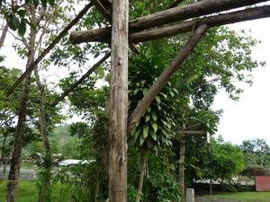

pes-ek 
/pɔsʔɔk/
n.
“post”
1.
n.
post (in the ground)
Eng. post; stake; pillar; fence-post
Tag. halígi
Ceb. haligi
Ilo.: adígi; pasánggir
OCM: Architecture (341)
Online dict status: -
Usage level: F
v.
for someone (egpes-ek, agent, agent, eg><ø-) to drive in posts to form the foundation of a new building
Egpes-ek key e kuntee.
We will post now.
Eng. drive in; implant
Online dict status: -
Usage level: M
v.
(igpes-ek, ig><ø-) to use a post to drive itself into the ground
Igpes-ek ney e ka sungkaleg.
We will put up the post.
Eng. use a post
OCM: Construction (331)
Online dict status: -
Usage level: M
2.
v.
a generic term for someone or some organization (egpes-ek, agent, agent, eg><ø-) to begin building a house, church, or other structure
Eng. build; establish
Online dict status: -
Usage level: M
v.
for someone (egpames-ek, impames-ek, agent, eg><ø-paN-) to put a post (igpames-ek, impames-ek, instrument, ig-paN-) in the ground (egpames-ekan, impames-ekan/pigpames-ekan, location, eg><an-paN-)
Eng. post, put in the ground
Online dict status: -
Usage level: M
Idiom: impames-ek_te_langit
n.
Ref.Gloss: horizon (literally post of heaven). These are the invisible posts that are believed to support heaven.
OCM: Cosmology (772)
DDP: Heaven, hell (4.9.6)
Online dict status: -
Usage level: RI
Updated by: RJH,QDL,RJH
Last updated: 06/Feb/2013
This page last updated: 28-Dec-2019
Copyright © 2009-2014, Matigsalug Language Christian Association, Inc